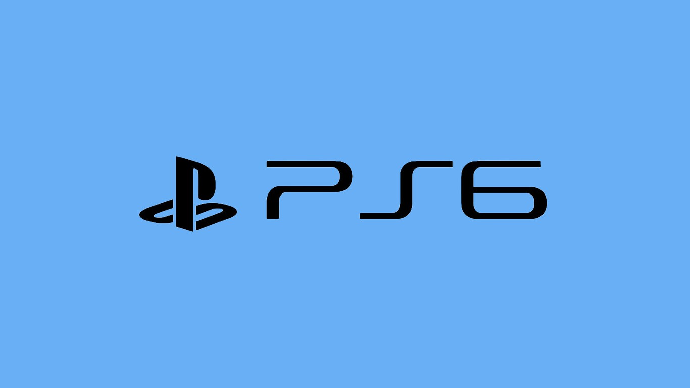

PlayStation 6 podría llegar en 2027
Sony ha compartido planes a largo plazo, incluyendo el lanzamiento de la PlayStation 6 en 2027. La consola promete soporte mejorado para realidad virtual.
Características esperadas
Se espera que la PS6 tenga un enfoque en VR y gráficos en 8K...
Expectativas
Los fans esperan que Sony revele más detalles en 2026.